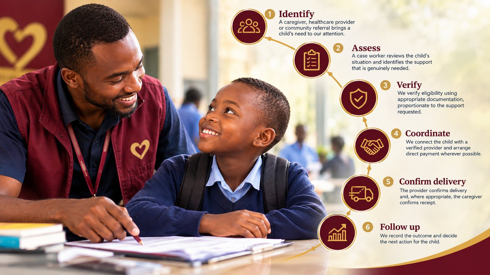
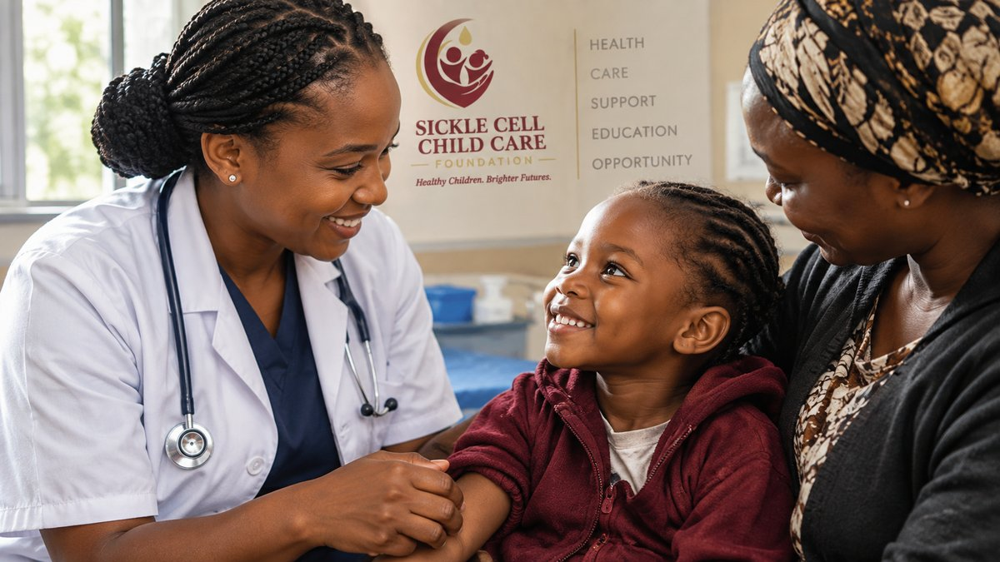

Tunashiriki hadithi kwa heshima - kamwe si kama mshtuko wa kuchangisha fedha. Kila hadithi inayochapishwa hapa ina idhini ifaayo ya mlezi na ukaguzi wa ulinzi wa mtoto.

Kwa msaada thabiti wa dawa na ruzuku ya vifaa vya shule, Amina amehudhuria shule bila kukatizwa muhula huu. Imeshirikiwa kwa ruhusa ya mlezi wake.

"Kujua kwamba msaada wa dawa ungeendelea kila mwezi kulinifanya niweze kupanga mahitaji mengine ya mtoto wangu pia." - Mlezi wa Taasisi, Nairobi.